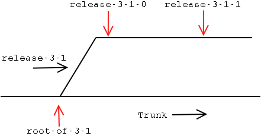

| 5 Version Numbers and CVS Tags |
Each sub-minor version number corresponds to a real release of software. Each has a tag that looks like release-x-y-z. However, this tag is not a branch. This might seem confusing at first, but it makes working with CVS simpler. Here's an example. Lets say we have made a release of version 3.1.0 and some problems have been found. We can commit changes to that release until we are happy with the fixes. At that time we then tag that point on the 3-1 branch as 3-1-1 and make the source code tar files for version 3.1.1. See Figure 5.

| 5 Version Numbers and CVS Tags |